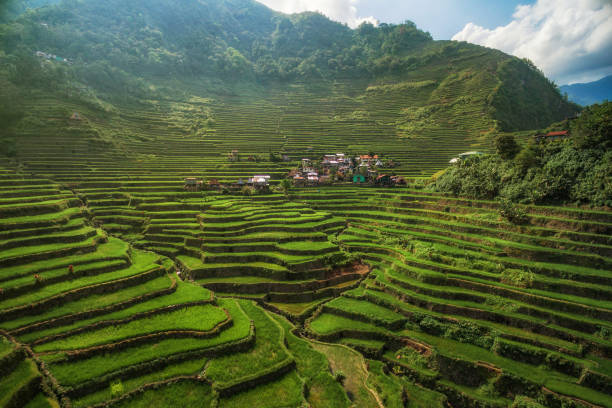

Republic of the Philippines
Department of Environment and Natural Resources
Cordillera Administrative Region
In collaboration with
Saint Louis University

Tracking administrative boundaries, geological data, and environmental metrics across the Cordilleras — the Watershed Cradle of Northern Luzon.
The Cordillera Administrative Region serves as the watershed cradle of Northern Philippines, supplying vital water resources to the lowlands. The Department of Environment and Natural Resources' mandate is to monitor, protect, and sustain these ecological boundaries that support millions of Filipinos across Regions I, II, and III.
A watershed is an area of land where all water drains to a common outlet such as a river, lake, or sea. Healthy watersheds mean clean water, productive fisheries, and resilient communities. Through systematic monitoring, we track changes in land use, water quality, and biodiversity across CAR's major river basins.

The Cordillera Administrative Region hosts 13 major river basins — the Watershed Cradle of Northern Luzon.
Originates in Benguet, supports the Ambuklao, Binga, and San Roque hydroelectric plants, and supplies irrigation for Pangasinan.
Headwaters in Benguet, Mountain Province, and Kalinga. Supports mini-hydro plants and irrigates Kalinga, Apayao, Cagayan, and Isabela.
Originates from Abra, Mountain Province, and Benguet. One of the five major rivers in the Philippines, irrigating Ilocos Sur.
Headwaters in Apayao, irrigates Cagayan Province, and exits via the Cagayan River to the Babuyan Channel.

Dive into the data. Explore administrative boundaries, river networks, and geological profiles across the Cordillera Administrative Region.
Explore the Map